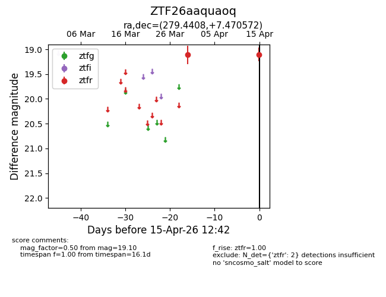
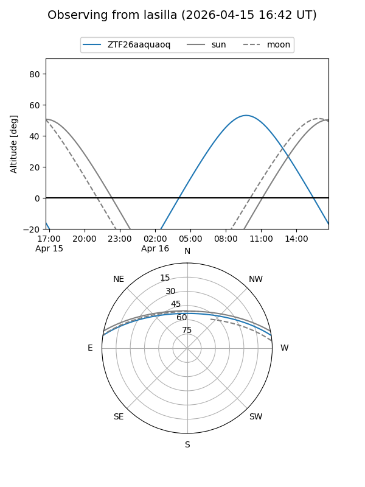
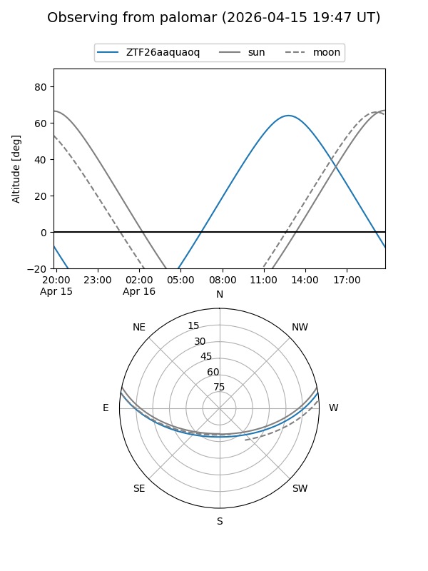
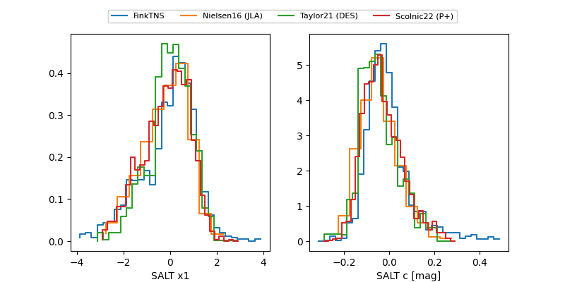

ZTF26aaquaoq
Target ZTF26aaquaoq at 2026-04-15 12:54
Aliases and brokers:
FINK: link
Lasair: link
ALeRCE: link
alt names
ZTF26aaquaoq (ztf,fink_ztf)
Coordinates:
equatorial (ra, dec) = 279.4408,+7.47057
equatorial (HMS+DMS) = 18:37:45.79,+07:28:14.06
galactic (l, b) = (38.0561,+6.42526)
Flags:
Photometry:
last ztfr=19.10
2 ztfr detections
Lightcurve

Visibility


Additional plots
